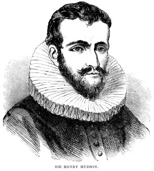

Teaching Point:
Today we will learn how to use Google Slides to make a Google Docs Slideshow.
Google Slides Intro
Google Slides is just like Microsoft Powerpoint. It is used to make slideshows that have transitions and other special effects. Since Google wants to make everything easy to use, there are fewer choices, but like other Google Docs, your slideshow saves itself, you can work on it anywhere, and you can share it with others.
NY Explorers Slideshow Project
In our last project we made a Shared Document that had a little bit of information about 4 European Explorers who were important to learning about New York. You entered a bit of information into your Document that others could use to learn about your explorer, and they did the same for you. You should now have a little bit of knowledge about each of the 4 explorers.
For our next project you will pick any ONE of the four explorers we researched, and make a slideshow about that person. You will use the same resources we used to research our Shared Doc.
Today's Assignment
Use the red Create Button to create a new Slideshow, choose a Theme, and write your Title Slide. Your Title Slide should have your explorers name in the Title, and your name and class number in the subtitle. Share it to agursky@ps169q.org.
Extension Activity
Start reading up on your explorer by using the resources below.
Back to School Portal